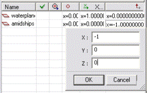
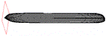
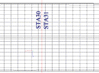
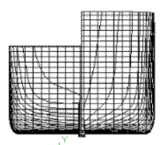
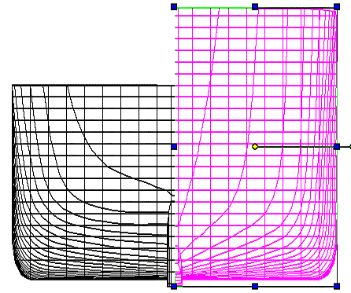
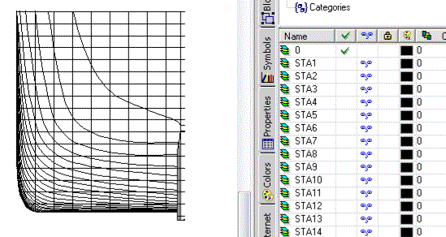
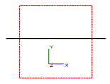
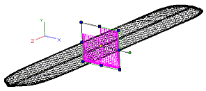
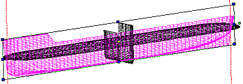

| HOME
Hull Lofting Tutorial: |
| Start: 0 Set the first dxf: 1 Paste other dxf's: 2 Loft profiles: 3 Loft test: 4 Loft Better: 5 Shelling: 6 Full Length: 7 Keel, Mirror & Render: 8 |
| Background: |
| The ship lines were created by Dr Allen Magnuson in Feb 2005 using Vacanti Prolines LE. The data was exported in 2D dxf format, then traced in TurboCad Pro 8.2. Hull is based on the proportions of Noah's Ark according to Genesis 6:15. Tutorial by Tim Lovett Feb 05. |
STEP 2: Paste the other dxf's
1. Workplane for Body lines
In Design Director (DD), click on WorkPlanes, then Right Button (RB) in table > Create New > type "midship".
Tick (check) it. You will see that the plane is lying flat but we want it upright. To get the workplane vertical and facing the right way we have to play with the orientation.
- Position: 0, 0, 0 (leave as default)
- X Vector: 0, -1, 0 (horizontal pointing to right when viewing by workplane)
- Up vector: -1, 0, 0 (the 'up' vector is the plane normal)

Spin it to check. Not very "amidships" is it? It has defaulted to station 0.

2. Move Body workplane to midship
Remember that station spacing? 90.861". We need to move the plane 59/2 spacings in the +X direction, which is 2680.4 inches.
To move the new workplane; In DD, click the Position cell of the "midship" workplane. Enter X of 2680.4 > OK. (If the plane does not move, sometimes you might set another plane as current, then come back and set this one current to refresh it - assume the workplanes are on of course. Workspace > Display Workplane)
Notice that the new workplane does not line up with any station - that's because we have an even number of stations. It sits exactly halfway between Station 30 and Station 31. (You can check this by going back to Layers in DD, then invisible STA30 or STA31.

3. Group the Body.dxf geometry
To paste Body.dxf onto the new plane;
- Start a new temporary TC drawing. Start > New... > New from Scratch
- Open Body.dxf

- This time we want to break the sketch into 2 halves, and group each half separately. (You'll see why later). Make sure you get everything on the RHS - use a combination of window selects and picks while holding the shift button down. Group this side; Format > Create Group

- Do the same for LHS. Take care to get them all. (You can turn off the current layer visibility in DD to check if you got them all on the RHS... Looks like this;

- Now select the remaining LHS geometry and group it.
- Turn visibility back on to your current layer (mine was Layer 0)
- Select both sides and and copy to clipboard.
4. Insert the Body.dxf lines
Back on the Ship.tcw drawing, set the view to the new workplane (in DD click the 3rd column "View by Workplane" of "midship"). You will get a very boring scene since you are now looking "end on".

Now paste from clipboard. Spin in 3d to check.

Check if Body lines are centered to the hull center line, measure any mismatch and move it by coordinates. Looks pretty good to me - no matter how much I zoom up the sides are aligned.
Better save it.
5. Make the Profile workplane
In DD, under workplanes > RB > Create New > "profile".
Orientate the plane;
- Position: (2680.4, 0, 0)
- X vector: (1, 0, 0)
- Up vector: (0, -1, 0)
Don't forget to refresh to see the new workplane orientation. To check it's position, view from top (alt+up arrow) and zoom up to check the edge view of the new workplane lines up with centre of the plan lines.
6. Fit Profile.dxf
- Go get it; File > Open > Profile.dxf.
- Group it; Window Select everything > Format > Create Group.
- Copy it to clipboard; Edit > Copy.
- Now go back to Ship.tcw, then 'View by Workplane' on "profile".
To attempt some symmetry, turn off workplane (Workspace > Show workplanes). Then View > Zoom> Extents to center the stuff. Now turn workplanes on again.
- Now paste. Looks reasonable

Still need to check the position carefully. Zoom up shows alignment is OK.
Finished the dxf setup! SAVE IT
|
Tim Lovett © 2005 | All Rights Reserved| http://www.worldwideflood.com |